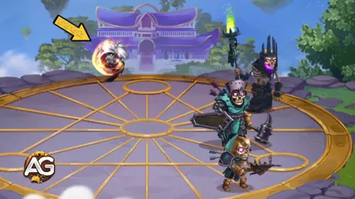

Kayla, the fierce Fire Herald, blazes across the battlefield with unmatched rage and determination. Torn between her ashen elf heritage and demonic bloodline, she channels her fury into unstoppable attacks that burn through even the strongest defenses.
Once haunted by her past, Kayla now fights beside her brother Aidan to bring light and hope back to the Dominion. Whether cutting down backline supports like Sebastian or tanking hits at the front, Kayla’s fiery presence changes the course of battle.
Kayla Guide - Hero Wars: Dominion Era, a game developed by Nexters.
Who Is Kayla?
Kayla is a front-line Warrior from the Fire Heralds faction in Hero Wars: Dominion Era. Guided by her burning spirit and agility, she excels at disrupting the backline and eliminating key heroes like Sebastian before they can turn the tide.
Class: Warrior
Position: Front Line
Main Stat: Agility
Fueled by rage and redemption, Kayla’s journey is one of fire and light — every strike she lands reminds her that even the most broken can ignite hope again.
In battle, her ability to target and destroy backline enemies makes her a deadly asset for offensive teams seeking to dismantle fragile supports and control heroes.
Kayla Pros and Cons - Hero Wars: Web and Facebook
✅ Pros
Strong front-line warrior with high Physical Attack and burn damage, making her a great threat to backline heroes.
Phoenix Glyphs can deal significant pure damage over time, especially when detonated with Raging Sparks.
Agile hero with the ability to jump behind enemies (Possessed by Fire), disrupting backline formations.
High synergy with team buffs and pets that enhance Physical Attack or Pure damage.
Overheat mechanic provides bonus Armor and Magic Defense, increasing survivability in prolonged fights.
⌠Cons
Vulnerable to heroes that can reposition or push her (e.g., Faceless, Lars, Maya, Cascade).
Burning state consumes health over time, requiring careful timing and healing support.
Damage output can be lower if enemies quickly cleanse or evade Phoenix Glyphs.
Dependent on proper positioning to maximize skill effectiveness; poor placement reduces overall impact.
Less effective against teams with high healing reduction or immunity to debuffs.
Kayla Skills Upgrade Priority - Hero Wars: Dominion Era
Learn how to upgrade Kayla’s fiery abilities effectively! This guide explains each skill’s purpose, damage type, and why some upgrades matter more than others.
1st – Phoenix's Fury
Kayla throws her chakram, marking enemies with the Phoenix Glyph. The Glyph burns enemies for 6 seconds, dealing pure damage over time. If enemies are already marked, the Glyph explodes, causing massive physical damage and dealing the remaining burn damage instantly. This is her strongest and most iconic attack.
Burn Damage Formula:(6932 + 8% Physical Attack + Ivl * 10 Pure Damage per second).
Evolution Priority:Very High – This is Kayla’s main source of damage and defines her playstyle. It combines pure and physical damage, making it powerful against both tanks and squishy heroes. Max this first to boost her overall battle impact.
Skill - Phoenix's Fury, Hero Wars Dominion Era.
2nd – Raging Sparks
When Kayla attacks enemies marked by the Phoenix Glyph, she releases flaming sparks that hit nearby enemies with physical damage. This skill spreads damage across groups of enemies, making her even more dangerous when multiple targets are burned.
Formula: (140% Physical Attack + Ivl * 120).
Evolution Priority:High – This skill works together with her main one, increasing her total area damage. It’s very effective in group fights and helps her wipe out backline heroes faster. Upgrade this after Phoenix’s Fury.
Skill - Raging Sparks, Hero Wars Dominion Era.
3rd – Possessed by Fire
When Kayla’s health is above 60%, she jumps behind the farthest enemy and sets herself on fire. In this burning state, she loses 2% of her max health per second but greatly increases her attack frequency and keeps marking enemies with Phoenix Glyphs. When her health drops below 30%, she retreats to her team.
Formula: (Self-burn 2% Health per second).
Evolution Priority:Medium-High – This skill improves Kayla’s aggressiveness and lets her apply more Glyphs faster. It’s risky because she sacrifices health, but when upgraded, it keeps her in battle longer before retreating.
Skill - Possessed by Fire, Hero Wars Dominion Era.
4th – Overheat
After Kayla stops burning, she enters the Overheated state, gaining additional Armor and Magic Defense. This helps her survive a bit longer after her fiery assault ends.
Evolution Priority:Medium – While it helps her defense, it doesn’t increase her offensive potential. Upgrade this last, since her main value comes from damage rather than defense boosts.

Skill - Overheat, Hero Wars Dominion Era.
Best Skin for Kayla – Hero Wars: Dominion Era
Find out which Kayla skins to upgrade first in Hero Wars: Dominion Era based on how each one improves her skills and overall battle performance.
Default Skin
Stats gain: Agility +1,365
- Physical attack from Agility: +4,095
- Armor from Agility: +1,365
Each agility point grants two points to physical attack, one point to armor, and one extra point to physical attack if agility is the main stat of a hero.
Evolution Priority:High – This skin boosts Kayla’s main stat, Agility, increasing her physical attack and armor. Since most of her skills scale with Physical Attack, it’s essential for consistent damage and survivability.
Total of Agility Skin Stones for max level:
30,825
Solar Skin
Stats gain: Health +106,645
Evolution Priority:Medium-High – The Health bonus increases Kayla’s survivability during her self-burning phase from “Possessed by Fire”. This skin is helpful for longer fights but less impactful on her damage output compared to the others.
Total of Agility Skin Stones for max level:
55,410
Cybernetic Skin
Stats gain: Physical Attack +7,095
Evolution Priority:Very High – This skin gives the strongest direct boost to Kayla’s damage. Since her main abilities like Phoenix’s Fury and Raging Sparks scale with Physical Attack, this skin has the highest impact on her offensive performance in any mode.
Total of Agility Skin Stones for max level:
55,410
Masquerade Skin
Stats gain: Armor +10,650
Evolution Priority:Medium – The Armor boost helps Kayla survive against strong physical teams, but since her main weaknesses are often from magical damage during her self-burn, this skin has only moderate value for general fights.
Total of Agility Skin Stones for max level:
55,410
Kayla Glyph Evolution Priority
Discover the best order to upgrade Kayla’s glyphs in Hero Wars: Dominion Era. Learn which stats most improve her fiery skills and survival in long battles.
1st Glyph – Physical Attack
This glyph directly powers up all of Kayla’s damaging skills. Both Phoenix’s Fury and Raging Sparks scale with Physical Attack, making this her strongest and most important glyph.
Stats gain: Physical Attack +4,340
Evolution Priority:Very High – Since every attack and skill benefits from Physical Attack, this glyph gives the best overall power boost. It should always be your first focus.
2nd Glyph – Health
Health increases Kayla’s survivability during her Possessed by Fire state, where she continuously loses HP. More health means she can keep burning longer, extending her high-damage phase before retreating.
Stats gain: Health +62,200
Evolution Priority:Medium-High – Important for keeping Kayla alive while she sacrifices her HP for damage. It’s not as strong offensively, but very helpful for sustained fights.
3rd Glyph – Magic Defense
This glyph helps Kayla resist magical damage. Since she is a front-line hero, she often faces magic users early in battle, so this stat gives her more durability against mages.
Stats gain: Magic Defense +6,500
Evolution Priority:Medium – Good to have for specific matchups, especially against magic-based teams, but less valuable than pure offense or HP.
4th Glyph – Armor Penetration
Armor Penetration helps Kayla deal more real damage against tough tanks. It complements her Physical Attack stat, ensuring her strikes cut through enemy defenses effectively.
Stats gain: Armor Penetration +6,500
Evolution Priority:High – Very useful for increasing total damage, especially versus armored heroes. Upgrade after Physical Attack for better offensive scaling.
5th Glyph – Agility
Agility is Kayla’s main stat and passively improves both her Physical Attack and Armor. However, its growth is slower compared to direct Physical Attack or Armor Penetration bonuses.
Stats gain: Agility +1,135
- Physical attack from Agility: +3,405
- Armor from Agility: +1,135
Each Agility point grants two points to Physical Attack, one point to Armor, and one extra point to Physical Attack if Agility is the main stat.
Evolution Priority:Low – Offers balanced but slower scaling than direct attack glyphs. Leave it for last when all main damage stats are already upgraded.
Kayla Artifact Evolution Priority Hero Wars: Dominion Era
Kayla’s artifacts enhance her burning damage and overall endurance. Her weapon artifact is essential for offense, while her ring boosts her main stats for stronger skill damage.
Chakram of Scorching Frenzy Artifact:
Stats gain: Physical Attack +33,459
Evolution Priority:Very High – Most important artifact. Activates with Kayla’s ultimate, Shieldbreaker, boosting team Physical Attack for 9 seconds. This maximizes her skill damage and overall offensive impact.
Defender’s Covenant Artifact:
Stats gain: Armor +12,546, Magic Defense +12,546
Evolution Priority:Medium – Third priority. Provides extra defense, which helps Kayla survive longer, but does not boost her offensive skills directly.
Agility Ring Artifact:
Stats gain: Agility +6,249
- Physical Attack from Agility: +18,747
- Armor from Agility: +6,249
Evolution Priority:High – Second priority. Improves both Physical Attack and Armor, directly enhancing Kayla’s skill damage while giving some survivability.
Best Patronage for Kayla
Choosing the right pet for Kayla maximizes her burn damage and skill effectiveness, enhancing both offense and survivability in battle.
Albus – The best pet for Kayla because its patronage increases both Physical Attack and Magic Attack, while its bonus skill boosts the Pure damage dealt by Kayla, directly amplifying her Phoenix’s Fury and Raging Sparks skills. This makes her burst and sustained burn damage significantly stronger.
Biscuit – Useful for reducing enemy healing. Its patronage increases Magic Attack and Armor, and the bonus skill reduces the healing received by enemies for 5 seconds whenever Kayla attacks. While this indirectly improves her damage output against sustain-heavy teams, it is slightly less effective than Albus for maximizing pure burn damage.
How to Counter Kayla - Hero Wars: Dominion Era
These heroes are effective against Kayla by disrupting her positioning, reducing her burn damage uptime, or controlling her with crowd control abilities.
Cascade: His Tidal Wave scatters enemies in random directions, breaking Kayla’s positioning and interrupting her basic attack rotations. This reduces the uptime of her Phoenix Glyphs and Raging Sparks, weakening her overall burn damage output.
Faceless
Faceless: His Power Throw lifts the nearest enemy into the air and drops them at the center of the enemy team, stunning all enemies in range for 2 seconds. This interrupts Kayla’s attacks and prevents her from applying or detonating Phoenix Glyphs efficiently.
Lars
Lars: His Lord of the Storm drags enemies to the storm’s eye and applies a Mark of Water, disrupting Kayla’s positioning and reducing the effectiveness of her burn skills. High-level targets are slightly less affected, but positioning control is still very strong.
Maya
Maya: Her Poisonous Bonds entangles enemies at the edges of the battlefield, pulling them together and poisoning them. The poison deals significant pure damage over 6 seconds, countering Kayla’s survivability and forcing her out of optimal positioning for Phoenix Glyphs.
Kayla Best War Flag Hero Wars
Discover the best War Flags for Kayla in Hero Wars: Dominion Era, enhancing her burn damage and boosting team efficiency in front-line battles.
War Flag of Swift Warriors:
Kayla and Team Benefit: Increases skill cooldown speed for Warriors by 5%, allowing Kayla and other front-line allies to apply Phoenix Glyphs and basic attacks more frequently, maximizing burn damage and pressure on the enemy backline.
War Flag of Decline:
Kayla and Team Benefit: Reduces the enemy team's healing by 10%, ensuring that Kayla’s burn damage from Phoenix Glyphs and Raging Sparks is more effective, especially against sustain-heavy teams.
War Flag of Readiness:
Kayla and Team Benefit (with Aidan): Gives 100 energy to the rearmost hero at the start and every 20 seconds. When paired with Aidan, this synergizes perfectly with Bonds of Flame and Phoenix’s Embrace. Aidan’s shield protects both him and Kayla, absorbing damage and exploding to cast Phoenix Glyphs on enemies. This allows Kayla to maximize her burn damage safely while controlling the front line, making the team highly efficient in coordinated attacks.
Best Teams for Kayla Hero Wars: Dominion Era
Top Defense Teams for Kayla
#
Table: Best Defense Teams for Kayla
Axel, Aidan, Sebastian, Dante, Kayla, Rufus
Khorus, Aidan, Isaac, Guus, Kayla, Julius
Axel, fafnir, Thea, Sebastian, Dante, Kayla
Top Attack Teams for Kayla
#
Table: Best Attack Teams for Kayla
Rufus, Kayla, Dante, Sebastian, Aidan, Axel
Julius, Kayla, Guus, Isaac, Aidan, Khorus
Kayla, Sebastian, Thea, Fafnir, Axel
Conclusion – Kayla Guide Hero Wars: Dominion Era
Kayla is a powerful front-line warrior capable of dealing massive burn damage while controlling enemy backlines. Her Phoenix Glyphs and Raging Sparks make her a constant threat, especially when paired with the right pets, War Flags, and artifacts.
To maximize her effectiveness:
Focus on upgrading skills in the recommended priority, emphasizing Phoenix's Fury for high burst and sustained burn damage.
Equip artifacts that enhance Physical Attack and survivability, such as the Chakram of Scorching Frenzy and Agility Ring.
Choose pets that amplify Pure damage or improve skill synergy, like Albus, to boost her offensive capabilities.
Use War Flags that speed up skill cooldowns, reduce enemy healing, or provide energy to allies, especially when pairing with Aidan for Bonds of Flame and Phoenix’s Embrace.
Be mindful of counters that can reposition or stun her, such as Faceless, Lars, Maya, and Cascade, and adjust team composition accordingly.
Overall, Kayla excels when used strategically with proper positioning, synergy, and support. With careful planning, she can dominate battles, control the front line, and deal devastating burn damage to enemies, making her a must-have hero in Hero Wars: Dominion Era.
About the Author
Alexandre Domingos holds a postgraduate degree in Engineering and works as a Production Supervisor. In his spare time, he explores the gaming world as a YouTuber and blogger at Alexandre Games, combining his passion for technology and strategy. He has been immersed in gaming since the age of 5, starting on classic platforms like MSX, Master System, Nintendo, and even an old 286 PC. Since 2019, Alexandre has also been playing Hero Wars and Mobile Legends, among other mobile games, creating guides, tutorials, and analyses for the community.
Did you like our Kayla Guide for Hero Wars Web and Facebook? Is there something you didn't understand or would like to suggest changes to? We invite you to join our comment section on the Alexandre Games Blog page. Feel free to express your opinion, clarify your doubts, and share your suggestions. Click the button below to get started:


 30,825
30,825